리눅스마스터-1급 (2010-03-13 기출문제)
1과목: 리눅스 실무의 이해
1. 기억장소 배치기법에서 프로그램이나 데이터가 들어갈 수 있는 크기의 빈 영역 중 단편화를 가장 적게 남기는 분할영역에 배치시키는 방법을 무엇이라 하는가?
- 최초적합방법(First Fit)
- 최적적합방법(Best Fit)
- 최악적합방법(Worst Fit)
- FIFO(First-in, First-out)
(정답률: 87%)

2. 다음 중 리눅스 운영체제에 대한 설명으로 틀린 것은?
- 동적 공유 라이브러리(DynamicSharedLibrary)를 제공한다.
- 다중 사용자,다중 작업 시스템이다.
- 향후 MS 윈도우의 NTFS 파일시스템 지원 기능이 개발되면 임베디드 분야에서도 활용이 가능할 것으로 예상되어진다.
- 터미널 모드와 x-window 환경에서 모두 사용이 가능하다.
(정답률: 86%)
3. 리눅스 커널의 버전이 kernel-2.6.32.8이라 할 때, 다음 설명 중 알맞은 것은?
- 커널은 베타버전으로서 패치가 32번 이루어 졌다.
- 커널은 공식적인 테스트가 32번 이루어졌으며, 베타버전이다.
- 커널은 32번의 패치가 이루어진 안정화 버전이다.
- 커널은 8번의 패치가 이루어진 안정화 버전이다.
(정답률: 68%)
4. 다음 GPL(General Public License)에 대한 설명 중 틀린 것은?
- FSF(Free Software Foundation)에 의해서 만들어진 특별한 라이센스이다.
- GNU 정신에 입각하여 모든 프로그램의 소스를 공개하자는 것이 주된 목적이다.
- 해당 프로그램을 마음대로 배포,복사,수정 할 수 있으며,수정한 프로그램 역시 GPL을 가지도록 한다는 라이센스를 말하는 것이다.
- GPL을 따라 제작된 프로그램을 참조하여 수정한 경우에도 50% 이상의 변경이 있으면 독점적인 소프트웨어 라이센스를 부여하도록 명문화하고 있다.
(정답률: 79%)
5. 페이지교체(Page Replacement)알고리즘은 페이지 부재 발생 시 새로운 페이지를 적재하기 위해 기존의 페이지를 효율적으로 제거하는 알고리즘 이다.이중 참조한 지 가장 오래된 페이지를 교체하는 방식은?
- FIFO(First-In, First-Out)
- LRU(Least Recently Used)
- LIFO(Last-In, First-Out)
- NUR(Not Used Recently)
(정답률: 46%)
6. 데이터의 손실을 최소화하기 위하여 데이터를 여러 개의 하드디스크에 분산 또는 중복시켜 저장하는 RAID에 대한 설명 중 틀린 것은?
- RAID-0 :중복되지 않는 어레이(Array)를 가지고 있으나 데이터를 중복해서 기록하지 않으므로,하나의 드라이브 장애 시 전체적으로 장애 발생 확률이 높다.
- RAID-1:디스크 미러링이라고도 하는데,중복 저장된 데이터를 가진 적어도 2개의 드라이브로 구성되며,전체용량의 절반이 여분의 데이터를 기록하기 위해 사용된다.
- RAID-3:한 드라이브에 패리티 정보를 저장하고,나머지 드라이브 사이에 데이터를 바이트 단위로 분산하여 저장하며,장애 발생 시 다른 드라이브에 저장된 정보를 XOR 계산하여 수행 한다.
- RAID-4:전용패리티 드라이브 사용 시 생기는 쓰기 병목현상을 막기 위해 패리티 정보를 모든 드라이브에 나누어 기록한다.
(정답률: 52%)
7. 리눅스를 구성하는 요소 중 사용자의 명령을 해독하는 기능을 하는 것은?
- Shell
- Compiler
- Debug
- Interrupt
(정답률: 82%)
8. 다음 리눅스의 일반적인 디렉토리에 대한 설명 중 틀린 것은?
- /etc:리눅스시스템에 관한 각종 환경설정에 연관된 파일들과 디렉토리를 가진다.
- /boot:리눅스 커널이 저장되어 있는 디렉토리로서 각종 리눅스 부트에 필요한 부팅지원 파일들이 저장되어 있다.
- /mnt:외부장치인 플로피디스크,CD-ROM 등을 마운트하기 위해서 제공되는 디렉토리 이다.
- /usr:시스템 계정 사용자들의 홈디렉토리와 ftp,www 등과 같은 서비스 디렉토리들이 저장된다.
(정답률: 75%)
9. 다음은 리눅스 파일시스템의 무엇에 대한 설명 인가?
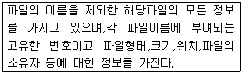
- 슈퍼블록(Super Block)
- 아이노드(Inode)
- 데이터블록(Data Block)
- 디렉토리블록(Directory Block)
(정답률: 83%)
10. 다음 중 X 윈도우 시스템에 대한 설명으로 틀린 것은?
- X 윈도우 시스템은 2개의 개별 소프트웨어 부분에 의해 제어되는 서버/클라이언트 시스템 이다.
- X 윈도우 시스템에서 클라이언트와 서버는 반드시 다른 기계,다른 시스템에서 운용이 되어야 한다.
- X 서버와 X 클라이언트사이의 메시지교환을 통한 상호작용은 X 프로토콜을 이용하여 이루어진다.
- X 프로토콜의 통신의 기본메시지로는 Request, Reply,Event,Error등이 있다.
(정답률: 74%)
11. GNOME에 대한 설명 중 틀린 것은?
- GNOME은 전용 윈도 매니저가 없는 대신에 대응 윈도매니저를 선택하여 사용한다.
- 윈도 매니저가 바뀌게 되면 데스크톱의 중요한 부분들이 바뀌어지게 된다.
- CORBA(Common ObjectRequestBroker Architecture)를 사용하여 소프트웨어들의 작성 언어나 실행 가능한 기계와 상관없이 상호간에 동작이 가능하게 해준다.
- GNOME은 사용자가 원하는 방법으로 데스크톱 환경을 마음대로 설정할 수 있으며,세션관리자는 이전설정을 기억해 항상 그 환경이 유지되도록 해준다.
(정답률: 53%)
12. 다음 중 쉘(Shell)에 대한 설명으로 틀린 것은?
- 리눅스 쉘은 각 운영체제와 사용자가 대화하는 중간 창구 역할을 한다.
- 리눅스 쉘은 DOS의 command.com 과 비슷 하다.
- 리눅스 쉘은 리눅스에서 사용자와 운영체제가 통신하는 주요수단이다.
- 리눅스 쉘은 시스템에 따라 사용할 수 있는 것이 정해져 있어 쉘을 통해 시스템의 종류를 구분할 수 있다.
(정답률: 60%)
13. 다음 명령어에 대한 설명으로 틀린 것은?
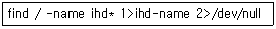
- /(root)아래에서 이름이 ihd로 시작되는 모든 파일을 찾는다.
- 정상적으로 찾은 파일의 경로는 ihd-name 이라는 파일에 저장되어진다.
- 에러메시지는 null이라는 파일에 저장되어 진다.
- 화면상에는 아무런 내용이 보이지 않으므로 ihd-name의 내용을 보려면 cat명령 등을 사용 하여야 한다.
(정답률: 66%)
14. 입력값이 ‘d’또는 ‘D’인 경우 읽어들인 filename에 해당하는 파일을 삭제하는 쉘 프로그램이다.다음 중 틀린 부분은 무엇인가?
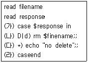
- 가
- 나
- 다
- 라
(정답률: 56%)
15. 다음 중 프로세스 관리블록(ProcessControlBlock)에 대한 설명으로 틀린 것은?
- 프로세스에 할당된 자원에 대한 정보를 가지고 있다.
- 프로세스의 우선순위에 대한 정보를 가지고 있다.
- 부모 프로세스와 자식 프로세스는 PCB를 공유 한다.
- 프로세스의 현 상태를 알 수 있다.
(정답률: 68%)
16. 다음 설명은 OSI7Layer중 어느 계층에 대한 설명인가?
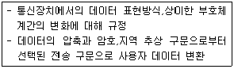
- 데이터 링크 계층(Data Link Layer)
- 네트워크 계층(Network Layer)
- 전송 계층(Transport Layer)
- 표현 계층(Presentation Layer)
(정답률: 74%)
17. 다음 중 브리지(Bridge)에 대한 설명으로 틀린 것은?
- 2개의 근거리 통신망(LAN)을 상호 접속해주는 통신망 연결 장치이다.
- OSI참조모델의 데이터 링크 계층에서 동작 한다.
- 프로토콜이 다른 통신망을 상호 접속하기 위한 장치이다.
- 접속된 LAN사이의 통신량을 조정 할 수 있다.
(정답률: 58%)
18. 다음 중 TCP/IP에 대한 설명으로 틀린 것은?
- 인터넷 대부분 서비스의 기반이 되고 있는 공개형 프로토콜로서 하드웨어와 OS에 독립적인 특성을 가진다.
- TCP(Transmission Control Protocol)는 패킷들의 전송흐름을 제어하는 역할을 한다.
- IP(Internet Protocol)은 데이터그램의 분열과 재배열,IP주소의 정의,데이터그램 라우팅의 역할을 담당한다.
- IP주소는 IPV4기준으로 64bit로 구성되어 있다.
(정답률: 81%)
19. TCP/IP에서 목적지 컴퓨터의 IP주소에 대한 MAC 주소를 알아내는 역할을 담당하는 프로토콜은?
- ARP
- RARP
- ICMP
- HOP
(정답률: 75%)
20. LAN카드를 운영체제에 인식시킨 후 IP 주소를 설정하고자 할때 사용할 수 있는 명령어로 알맞은 것은?
- route
- ping
- ifconfig
- nslookup
(정답률: 72%)
2과목: 리눅스 시스템 관리
21. 다음 중 루트(root)사용자에 대한 설명으로 틀린 것은?
- 루트 사용자는 파일에 대한 소유여부에 관계 없이 시스템에 존재하는 모든 파일과 프로그램에 접근할 수 있다.
- 루트 사용자의 실수로 시스템에 심각한 문제를 발생시킬 수 있다.
- 루트 사용자가 다시 “root”로 로그인하면 패스워드를 입력해야 한다.
- 루트 사용자는 시스템을 제한 없이 운영할 수 있다.
(정답률: 68%)
22. 다음 명령어 중 루트 권한을 가진 사용자만이 사용 할 수 있는 명령어가 아닌 것은?
- adduser
- groupdel
- su
- usermod
(정답률: 71%)
23. 다음 ( )안에 들어갈 내용으로 알맞은 것은?
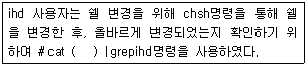
- /etc/shells
- /etc/passwd
- /etc/group
- /etc/shadow
(정답률: 52%)
24. 사용자 계정을 삭제하기 위해 userdel명령을 옵션 없이 사용하면 사용자 홈 디렉토리 및 사용자 정보 중 일부가 남아있게 된다.이러한 모든 정보를 삭제하기 위한 옵션으로 알맞은 것은?
- -a
- -r
- -x
- -t
(정답률: 74%)
25. ihd사용자의 패스워드 종료정보를 확인하려 할 때 사용할 수 있는 명령어와 그 정보가 저장된 파일이 알맞게 짝지어진 것은?
- chage -E ihd - /etc/passwd
- chage -E ihd - /etc/shadow
- chage -lihd - /etc/passwd
- chage -lihd - /etc/shadow
(정답률: 44%)
26. 다음 중 리눅스 시스템에서 사용하는 파일에 대한 설명으로 알맞은 것은?
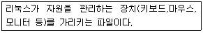
- 특수 파일
- 디렉토리 파일
- 시스템 파일
- 일반 파일
(정답률: 57%)
27. 리눅스 시스템에서 사용하는 디렉토리,파일의 생성 및 삭제와 관련이 없는 명령어는?
- mkdir
- cat
- gcc
- top
(정답률: 73%)
28. root사용자는 ( )안의 명령을 통해 a.txt파일의 소유권을 변경하였다.ihd사용자가 chown을 실행 했을 때,a.txt 파일의 권한이 없어 chown을 실행 할 수 없는 경우는?
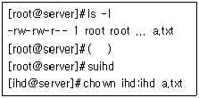
- chown ihd a.txt
- chown :ihd a.txt
- chown ihd:root a.txt
- chown ihd:ihd a.txt
(정답률: 50%)
29. 다음 ( )안에 들어갈 내용으로 알맞은 것은?(순서대로 가 나 다)
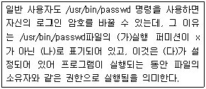
- 소유자, t, SGID
- 소유자, s, SUID
- 타인, t, sticky bit
- 타인, s, SGID
(정답률: 63%)
30. 파일 시스템 복구에 대한 설명 중 틀린 것은?
- fsck 명령을 통해 파일 시스템을 조사하여 손상된 파일을 출력해주며 사용자에게 그것을 복구할 것인지 물어본다.
- 파일 시스템의 결함이 하드웨어로 인한 문제(하드드라이브,메모리 불량 등)라면 fsck 명령을 통한 복구는 불가능하다.
- fsck명령을 매개 변수 없이 사용하면 하나의 파일 시스템만을 검사한다.
- fsck 명령을 수행하고 난 후에는 종료 값을 반환한다.
(정답률: 68%)
31. 다음 설명과 가장 관련 깊은 프로세스의 실행 레벨은 무엇인가?
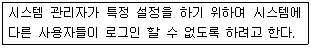
- 실행레벨 0
- 실행레벨 1
- 실행레벨 3
- 실행레벨 6
(정답률: 52%)
32. 현재 시스템에서 실행되고 있는 모든 프로세스를 보기 위하여 다음 명령어를 실행하였다.( )안에 들어갈 옵션으로 알맞은 것은?(오류 신고가 접수된 문제입니다. 반드시 정답과 해설을 확인하시기 바랍니다.)
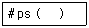
- a
- u
- x
- e
(정답률: 21%)
33. 포그라운드와 백그라운드 실행에 관한 설명 중 틀린 것은?
- 메타문자 ‘&’를 명령 뒤에 적어 실행하면 백그라운드로 실행된다.
- 명령을 입력하고 Enter를 치면 대부분 포그라운드로 실행된다.
- test프로그램을 포그라운드로 실행 중 ctrl+c로 실행을 멈춘 후,bg test 명령을 실행하면 test프로그램이 백그라운드로 실행된다.
- test프로그램을 백그라운드로 실행 후,fg test명령을 실행하면 백그라운드로 실행중인 test프로그램이 포그라운드로 실행된다.
(정답률: 58%)
34. ihd사용자가 소유한 하나의 프로세스가 계속해서 프로세스를 무한정 생성하는 것을 발견하여 ihd 사용자의 모든 프로세스를 종료시키기 위해 다음과 같이 조치를 취하였다.( )안에 들어갈 옵션으로 알맞은 것은?
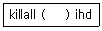
- -V
- -u
- -l
- -q
(정답률: 42%)
35. 다음 ps -l 명령의 실행 결과에 대한 설명 중 틀린 것은?
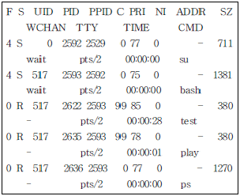
- Running상태의 프로세스는 3개이다.
- PID가 2593인 프로세스는 Sleeping상태이다.
- PID가 2622인 프로세스의 우선순위가 가장 높다.
- PID가 2636인 프로세스의 부모 프로세스 PID는 2593이다.
(정답률: 65%)
36. 다음 중 rpm 명령에 관한 설명으로 틀린 것은?
- rpm 확장자를 가지는 패키지를 설치/삭제 할 수 있다.
- 현재 파일시스템에 저장된 패키지만 설치 할 수 있다.
- 설치된 패키지의 목록을 볼 수 있다.
- 업그레이드할 때 사용자가 설정한 내용을 안전하게 보호해 준다.
(정답률: 59%)
37. 다음 중 dpkg명령에 관한 설명으로 틀린 것은?
- -i : 개별적인 패키지를 설치한다.
- -r : 개별적인 패키지를 제거한다.
- --purge : 사용자 설정을 유지하면서 개별적인 패키지를 제거한다.
- -s : 패키지의 상황 정보를 알려 준다.
(정답률: 53%)
38. 다음 중 make에 대한 설명으로 틀린 것은?
- 프로젝트를 효율적으로 관리하고 일관성 있게 관리하게 해준다.
- 무조건 Makefile에 있는 내용을 첫 번째 줄부터 순서대로 실행한다.
- 소스 파일을 직접 배포하는 경우에 널리 쓰인다.
- Makefile 내부에서 각각의 타겟들은 탭으로 시작하는 명령이 뒤따라온다.
(정답률: 59%)
39. gcc를 이용하여 foo.c,bar.c두 개의 파일을 컴파일해서 result라는 실행 파일을 생성하는 명령으로 올바른 것은?
- gcc -o resultfoo.c bar.c
- gcc -r resultfoo.c bar.c
- gcc foo.c+bar.c > result
- gcc foo.c bar.c> result
(정답률: 48%)
40. gzip옵션에 대한 설명 중 틀린 것은?
- -d : 압축을 푼다.
- -l : 현재 압축된 파일의 내용을 보여준다.
- -v : 압축 파일의 완전성을 검사한다.
- -9 : 최대한 압축한다.
(정답률: 39%)
41. 커널 컴파일을 위한 환경설정 명령 인터페이스로 보기 어려운 것은?
- make config
- make menuconfig
- make xconfig
- make devconfig
(정답률: 63%)
42. 커널을 컴파일을 하기 위하여 다음과 같은 명령어를 수행하였다.각 명령어에 대한 설명 중 틀린 것은?
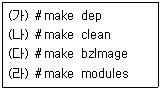
- (가)는 새 커널을 만들기를 시작하는 명령으로서 컴파일을 위한 의존성 관계를 설정한다.
- (나)는 이전에 수행했던 컴파일과정에서 생성된 목적파일,커널,임시파일,설정 값 등을 삭제한다.
- (다)는 압축된 커널이미지를 생성한다.
- (라)는 커널환경설정에서 모듈로 설정한 기능을 컴파일 한 후 컴파일된 모듈을 /lib/modules 아래 설치한다.
(정답률: 42%)
43. 리눅스 커널을 계속적으로 업그레이드 하면서 얻을 수 있는 장점으로 보기 어려운 것은?
- 라이센스 만료에 따른 사용기간 연장
- 시스템 관리능력의 개선
- 속도개선 및 버그 수정
- 새로운 하드웨어의 지원
(정답률: 68%)
44. 다음 중 스캐너와 관련이 있는 패키지는?
- SANE
- OSS
- ALSA
- LILO
(정답률: 81%)
45. 다음 중 리눅스의 프린터 설정에 관련된 파일이 저장된 곳은?
- /etc/printcap.conf
- /etc/printcap
- /etc/print.conf
- /etc/print.dev
(정답률: 45%)
46. PNP(Plug-and-Play)에 대한 설명 중 틀린 것은?
- PNP는 모뎀과 네트워크 카드,사운드 카드 등의 각종 하드웨어(장치)를 찾아낸 장소를 자동적으로 소프트웨어에 알려주는 기능을 말한다.
- PNP의 기능은 물리적 장치와 이것을 조작하는 소프트웨어(장치드라이버)와 일치시키고 장치와 드라이버 사이에 통신채널을 만드는 것이다.
- PNP는 I/O주소,DMA 채널,메모리 영역 등의 버스자원을 드라이버와 하드웨어 양쪽에 할당한다.
- 현재까지는 윈도우즈 계열에서만 PNP 기능이 제공되었으나 향후 리눅스 계열에서도 PNP 기능이 제공될 것으로 예상되어진다.
(정답률: 61%)
47. 상이한 시스템 상에서 장치의 드라이버를 새로이 컴파일하고 현재 사용 중인 시스템에 복사하여 적용하고자 할 때 우선적으로 모듈사이의 의존성 검사가 필요하다.이때 수행하여야 할 명령어로 알맞은 것은?
- insmod
- lsmod
- depmod
- rmmod
(정답률: 67%)
48. 현 시스템에서 사운드를 지원하지 않는 경우 사운드를 지원하도록 리눅스를 설정하려고 할 때 필요한 작업이라고 보기 어려운 것은?
- 사운드 카드를 설치하고 플러그 앤 플레이가 가능한 경우는 설정한다.
- 사운드를 지원하도록 커널을 설정하고 생성한다.
- 사운드 장치파일을 생성한다.
- /etc/dev/sound.conf파일에 저장된 정보를 확인한다.
(정답률: 49%)
49. 모듈에 대한 설명으로 틀린 것은?
- 필요로 하는 코드를 동적으로 로드하여 커널의 크기를 줄일 수 있다.
- 모듈이 커널에서 제거될 때 자신이 할당받은 커널 메모리나 인터럽트 같은 시스템자원은 재부팅을 통해서만이 해제가 가능하다.
- 로드된 모듈은 커널의 한 부분이 된다.
- 새로운 커널 코드를 재부팅하지 않고 테스트 하는데 유리하다.
(정답률: 53%)
50. 다음 ( )안에 들어갈 내용으로 알맞은 것은?
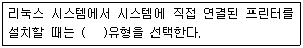
- SMB
- Network
- Remote
- Local
(정답률: 63%)
51. 다음 중 로그 파일과 관련 데몬이 잘못 짝지어진 것은?
- 시스템 로그(/var/log/messages) - syslogd
- 커널 로그(/var/log/dmesg) - sendmail
- 웹서버 액세스 로그(/var/log/apache/access_log) - apache
- 보안 로그(/var/log/secure) - xinetd
(정답률: 78%)
52. 다음 중 시스템 보안 관리에서 사용자 접근 보안의 물리적 접근 제한 방법이 아닌 것은?
- BIOS 보안
- 쉐도우 패스워드 사용
- xlock
- 부트로더 보안
(정답률: 47%)
53. 다음 중 TCP Wrapper에 대한 설명 중 틀린 것은?
- 암호화를 지원한다.
- /etc/hosts.allow 파일에는 접근 을 허용 할 서비스와 IP주소를 기록한다.
- /etc/hosts.deny파일에 denyALL을 설정하고 꼭 필요한 접근만 /etc/hosts.allow 파일에 기록하는 것이 더 나은 보안을 제공한다.
- 시스템 이름이나 도메인 이름보다 IP 주소를 사용할 것을 권고한다.
(정답률: 33%)
54. 다음 중 ssh에 대한 설명으로 틀린 것은?
- 두 호스트간의 통신 암호화와 사용자 인증에 공유키 방식을 사용한다.
- 주고받는 모든 패킷은 암호화되어 있다.
- X11Forwarding을 지원한다.
- sftp를 이용하여 암호화된 파일 전송도 지원한다.
(정답률: 28%)
55. OpenSSH 클라이언트를 이용하여 인증키를 만들기 위한 명령은?
- ssh--generate-keys
- ssh-keys
- ssh-keygen
- ssh-add
(정답률: 73%)
56. 다음 중 tripwire에 대한 설명으로 틀린 것은?
- 침입자가 파일을 바꿔치기 할 경우 알기 쉽게 해준다.
- 침입자가 파일을 바꿔치지 못하도록 원천적으로 봉쇄한다.
- MD5,SHA,CRC-32등의 다양한 암호화 함수를 제공한다.
- 먼저 시스템에 존재하는 파일의 데이터베이스를 생성해 둬야 한다.
(정답률: 53%)
57. OpenSSH 클라이언트를 이용하여 ssh 터널링을 구성하는 경우 사용 가능한 프로토콜은?
- HTTP
- FTP
- TELNET
- SOCKS
(정답률: 43%)
58. 다음 중 다단계 백업에 대한 설명으로 틀린 것은?
- 적은 비용으로 백업 보장 기간을 늘릴 수 있다.
- 파일 시스템을 복원하는데 드는 시간을 최소화 할 수 있다.
- 개인적인 용도나 작은 규모의 사이트에 적합 하다.
- 백업 기획안이 복잡해짐에 따라 신경쓸 부분이 많아진다.
(정답률: 49%)
59. 다음 중 압축을 사용한 백업에 대한 설명으로 틀린 것은?
- 비용을 줄일 수 있다.
- 작은 손상에도 모든 데이터를 잃을 수 있다.
- 백업 소요 시간이 크게 줄어든다.
- 각각의 파일을 따로 압축하면 백업이 손상 되어도 모든 파일을 살릴 수 있다.
(정답률: 53%)
60. 다음 중 dump에 대한 설명으로 틀린 것은?
- 점진적인 백업 기능을 제공한다.
- 백업이 기존 파일에 내용을 더하면서 수행될 수 있다.
- 결함(Holes)을 가진 파일들을 바르게 다루지 못한다.
- 여러 개의 테이프에 백업할 수 있다.
(정답률: 57%)
3과목: 네트워크 및 서비스의 활용
61. 웹 관련 서비스에 대한 설명 중 틀린 것은?
- 1990년에 팀 버너스 리(Tim BernersLee)박사는 윌드 와이드웹 이라는 최초의 넥스트(Next) 플랫폼용 브라우저를 공개하였다.
- 웹의 시작은 조직 내의 정보교환을 빠르게 하기 위해서 시작되었다.
- HTML에 대한 표준화 작업은 HTTPS 컨소시엄에서 주관하고 있다.
- HTTP는 인터넷에서 하이퍼텍스트 문서를 교환하기 위하여 사용되는 프로토콜이다.
(정답률: 55%)
62. PHP 언어에 대한 설명 중 틀린 것은?
- MySQL, Oracle, mSQL등 다양한 DBMS와 연동할 수 있다.
- 윈도우 서버의 IIS와 연동 할 수 있다.
- 윈도우의 ASP와 비슷한 역할을 한다.
- HTML문서 안에 PHP 코드를 삽입하면 클라이언트 쪽에서 문서를 처리하여 그 결과를 HTML로 만들어 내는 역할을 한다.
(정답률: 56%)
63. 아파치 웹서버에 PHP를 DSO 방식으로 연동 설치 후,HTML 파일내(확장자가 .html)의 PHP 프로그램을 실행시키려 한다.아파치 환경설정 파일(httpd.conf)에 다음 중 어떤 지시자를 추가 해야 하는가?
- AddType applications/httpd-php .html
- AddType applications/php .html
- AddType application/x-httpd-php .html
- AddType application/php .html
(정답률: 44%)
64. 아파치를 소스 컴파일하여 특정 디렉토리(/usr/local/apache/)에 설치하였다.설치된 경로 아래 생성된 디렉토리에 대한 설명 중 틀린 것은?
- bin/ : 아파치 서버프로그램,유틸리티 등의 실행 파일이 들어가 있다.
- cgi-bin/ : CGI 스크립트 프로그램 및 PID 파일이 위치한다.
- icons/ : 아파치 서버에서 사용하는 아이콘들이 들어 있다.
- logs/ : 아파치 로그 파일이 저장된다.
(정답률: 50%)
65. 아파치 서버를 사용하여 웹서비스를 할때 동시 접속자가 많아져 아파치 서버에 더 이상 접속이 되지 않았다.더 많은 접속자를 받아들이기 위해 아파치 설정파일(httpd.conf)에서 값을 수정해 줘야 하는 지시자는 무엇인가?
- MaxUsers
- MaxConnections
- MaxThreads
- MaxClients
(정답률: 58%)
66. 다음은 아파치 접근로그(access_log)파일의 로그 포맷을 정의한 부분이다.각 별명에 대한 설명이 적절한 것은?
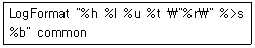
- %h : 요구된 헤더 내용
- %l : 원격 로그 이름
- %t : HTML문서의 이름(Title)
- %r : 요구한 URL
(정답률: 35%)
67. PostgreSQL의 3가지 주요 특징이 아닌 것은?
- 인공지능
- 고수준 확장성
- 관계형 모델
- 객체지향
(정답률: 65%)
68. 보안서버 구축에 사용되는 SSL(Secure Sockets Layer)에 대한 설명으로 알맞은 것은?
- 웹서버와 브라우저간에 데이터를 안전하게 주고받기 위한 업계 표준 프로토콜로서 미국 마이크로소프트 회사가 개발하였다.
- SSL은 웹을 위해 개발되었기 때문에 웹에서만 사용된다.
- SSL은 전송계층 서비스(OSI7계층)로 플랫폼과 어플리케이션에 독립적이다.
- 동일한 IP에서는 포트를 달리하여 여러 개의 보안 가상 호스트를 만들 수 있다.
(정답률: 34%)
69. 윈도우 및 이기종 운영체제와 파일 및 프린트 등을 공유하기 위해 사용하는 삼바서버의 환경 설정 파일(smb.conf)에 대한 설명 중 틀린 것은?
- security 지시자는 인증 레벨을 부여하는 것으로 4가지(share,user,ip,domain)종류가 있다.
- #,;은 모두 주석으로 인식된다.
- “hostsdeny=아이피”이렇게 설정하여 특정 ‘아이피’를 차단할 수 있다.
- “loadprinters=yes”로 설정하면 프린터 목록을 자동으로 로드 한다.
(정답률: 36%)
70. 다음 삼바관련 명령어에 대한 설명이 틀린 것은?
- smbpasswd : 삼바서버 사용자의 계정생성, 비밀번호 변경 등에 사용된다.
- testparm : 삼바서버 가동 속도를 테스트하기 위한 명령이다.
- smbstatus : 현재 삼바 서버 상태를 확인 할 수 있다.
- smbclient : 삼바서버에 접속하는 클라이언트 프로그램이다.
(정답률: 56%)
71. 윈도우 및 이기종 운영체제와 파일 및 프린트 등을 공유하기 위해 사용하는 삼바 서버의 보안 모델에 대한 다음 설명 중 틀린 것은?
- 사용자레벨의 경우 UNIX쪽과 PC쪽의 계정 이름이 동일한 사용자가 대다수일 때 그 위력을 발휘한다.
- 사용자 레벨보다 공유레벨이 관리가 어렵고, 성능은 우수하다.
- 공유 레벨은 프린트, CD-ROM, anonymous ftp등의 공유 디렉토리를 불특정 사용자들이 공유할 경우 유용하다.
- 사용자레벨에서 암호화된 암호파일을 사용하여 인증하도록 하려면 Security Options의 encrypt passwords를 Yes로 설정하는 동시에 Security Options의 smbpasswd 파일을 설정해야 한다.
(정답률: 40%)
72. NFS 서버는 항상 클라이언트가 자신의 자원을 마운트할 수 있도록 준비하고 있어야 하는데 이러한 과정을 익스포팅(exporting)이라고 한다. 익스포팅 설정에 적용할 수 있는 옵션에 대한 설명이 적절한 것은?
- root_squash : 서버와 클라이언트가 루트 계정을 사용
- rw : 공유된 자원을 읽기전용으로 마운트
- link_relative : 절대 심볼릭 링크를 상대 심볼릭 링크로 변경 시 사용
- insecure : 인증되지 않은 액세스는 불가능하게 함
(정답률: 39%)
73. NFS을 사용하기 위한 여러 유틸리티 프로그램에 대한 설명이 적절한 것은?
- mntnfs 명령어는 NFS 서버에 마운트하기 위해 사용된다.
- showmount 명령어에서 서버 측의 상태만을 보여주기 위해 -s 옵션을 사용한다.
- nfsstat 명령어에서 -d 옵션을 사용하여 클라이언트에서 사용하는 디렉토리 이름만을 출력 할 수 있다.
- nhfsstone 명령어는 시간당 부하의 수, 전송률, 실패율 등의 NFS에 관련된 데이터를 제공한다.
(정답률: 28%)
74. 다음은 FTP서버인 proftpd의 설정파일(proftpd.conf)의 일부분이다.다음 설명 중 틀린 것은?
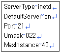
- 인터넷 슈퍼데몬에 의해서 실행된다.
- 최소 접속 가능한 사용자 수는 40이다.
- 새로운 텍스트 파일이 만들어지면 기본적인 파일 퍼미션은 644이다.
- FTP서버의 1차 IP주소 또는 가상 호스트 설정 블록에서 설정된 IP주소가 아닌 IP주소로부터 연결이 있을 때 기본으로 사용될 서버 설정을 해준다.
(정답률: 60%)
75. 파일 공유를 위한 목적으로 FTP서버인 Proftpd를 사용하여 무명 FTP서버를 구축하였다.proftpd의 설정파일(proftpd.conf)을 다음과 같이 작성하였을때 다음 설명 중 틀린 것은?
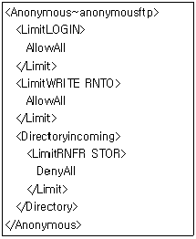
- 무명 FTP의 자료가 보관되는 곳은 anonymousftp 계정의 홈 디렉토리이다.
- incoming 디렉토리를 제외한 디렉토리 및 파일의 이름을 바꿀 수 있다.
- incoming 디렉토리는 서버에서 클라이언트로 파일을 전송 할 수 없다.
- incoming 디렉토리는 클라이언트에서 서버로 파일을 전송 할 수 없다.
(정답률: 43%)
76. 사용자A의 PC에서 메일 클라이언트를 사용하여 사용자 B에게 메일을 보내려 할 때 다음 ( ) 안에 들어갈 프로토콜을 순서대로 나열한 것은?
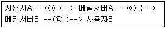
- (ㄱ) POP3, (ㄴ) SMTP, (ㄷ) POP3
- (ㄱ) SMTP, (ㄴ) SMTP, (ㄷ) POP3
- (ㄱ) POP3, (ㄴ) SMTP, (ㄷ) SMTP
- (ㄱ) SMTP, (ㄴ) POP3 ,(ㄷ) SMTP
(정답률: 58%)
77. DRAC(DynamicRelayAuthoriazationControl) 프로그램에 대한 설명으로 틀린 것은?
- /etc/mail/dracd.db 파일로 데이터베이스화하여 Relay한다.
- 자체 인증시스템으로 메일을 보낼 때 인증(id/pw)을 받고 메일을 전송한다.
- 사용자의 IP가 바뀌어도 자동으로 적용된다.
- DRAC의 동작은 POP3인증을 통해서 이루어 진다.
(정답률: 26%)
78. Sendmail설정파일(sendmail.cf)의 일부이다. 다음설명 중 알맞은 것은?
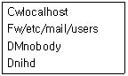
- localhost로 들어오는 메일은 수신을 거부한다.
- /etc/mail/users파일에 등록된 사용자만 메일을 수신 할 수 있다.
- Sendmail은 nobody권한으로 실행된다.
- Sendmail이 에러 메시지를 보낼 때 사용하는 사용자 이름은 ihd이다.
(정답률: 41%)
79. POP3 서버의 정상유무를 확인하기 위해 telnet 명령을 이용하여 확인 할 수 있다.다음 ( )안에 들어갈 POP3 명령어를 순서대로 나열한 것은?
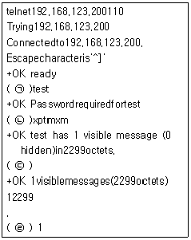
- (ㄱ) user, (ㄴ) pass, (ㄷ) list, (ㄹ),retr
- (ㄱ) user, (ㄴ) password, (ㄷ) ls, (ㄹ),ret
- (ㄱ) name, (ㄴ) passwd, (ㄷ) ls, (ㄹ) ret
- (ㄱ) name, (ㄴ) passwd, (ㄷ) ls, (ㄹ)retr
(정답률: 38%)
80. 다음에서 설명하고 있는 “지시자”는 다음 중 어느 것인가?
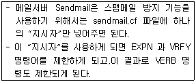
- spamOptions=authwarnings, goaway
- privacyOptions=authwarnings, goaway
- relayOptions=authwarnings, goaway
- securityOptions=authwarnings, goaway
(정답률: 38%)
81. 인터넷 수퍼데몬(xinetd)은 여러 가지 시그널을 사용하여 동작을 변경할 수 있다.다음 각 시그널에 대한 설명으로 알맞은 것은?
- SIGUSR1 : 소프트웨어 재설정
- SIGUSR2 : xinetd와 이 데몬이 생성한 데몬 종료
- SIGUSR3 : 하드웨어 재설정
- SIGTERM : 서버의 모든 프로세스 종료
(정답률: 23%)
82. 인터넷 수퍼데몬(xinetd)은 보안과 성능을 위한 여러 가지 옵션들을 제공하는데 다음 중 그 옵션에 대한 설명으로 틀린 것은?
- wait : 접속을 위해 대기하는 시간(초)을 설정 한다.
- server : 서버 프로그램(절대경로)을 설정한다.
- per_source : 동일 호스트로부터의 서버 접속 수를 설정한다.
- cps : 들어오는 접속 수를 제한한다.
(정답률: 21%)
83. 다음은 인터넷 수퍼데몬(xinetd)을 이용하여 ftp 서비스를 설정한 예이다.서버의 부하가 10이상 일 때 FTP서버에 대한 요청을 거부하기 위해 ( )안에 들어갈 속성은 다음 중 무엇인가?
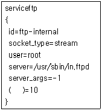
- max_load
- instances
- max_loadavg
- max_uptime
(정답률: 41%)
84. DNS서버에서 존(zone)은 해당 DNS가 담당하는 영역의 이름 풀이(Name Resolution)를 하는데 필요한 레코드들이 저장되어 데이터베이스를 이루고 있다.이러한 레코드들에 대한 설명 중 틀린 것은?
- SOA : zone의 전체 설정.반드시 첫 번째 레코드로 지정되어야 한다.
- A : 호스트 이름에 대응하는 IP 주소이다.
- PTR : IP주소에 대응하는 호스트 이름이다.
- CNAME : 특정 호스트 이름을 포인팅 하기 위한 IP주소이다.
(정답률: 53%)
85. DNS서버에 다음과 같은 zone파일을 생성하여 DNS를 운영하려고 할 때 다음 설명 중 알맞은 것은?
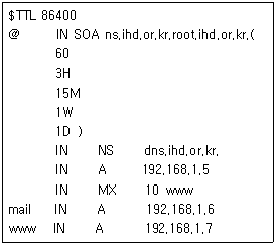
- 주 DNS 서버와 보조 DNS 서버간의 정보 동기화를 위한 시간 간격은 1분이다.
- 마스터 서버와의 정보 동기화를 위해 통신이 실패하였을 때 다음 시도를 위한 대기 시간은 15분이다.
- 동기화를 하려는 시도에도 불구하고 일정 시간동안 접속이 실패하여 작업을 진행하지 못했을 때 보조 DNS서버가 기존의 정보를 파기하는 시간은 하루이다.
- 메일은 192.168.1.6서버에서 수신한다.
(정답률: 31%)
86. DNS만으로 웹서버의 부하분산을 설정하려는 도메인의 zone 파일에 일부분이다.다음 설명 중 알맞은 것은?
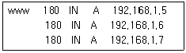
- 192.168.1.5서버의 커넥션이 많을 때 192.168.1.6 또는 192.168.1.7 서버에서 응답을 한다.
- 3대의 서버 중 한 대의 서버에 장애가 발생해도 정상적인 웹서비스가 가능하다.
- 192.168.1.7 서버의 응답이 느릴 때 192.168.1.6 또는 192.168.1.5 서버에서 응답을 한다.
- 이러한 설정은 RR(Round-Robin)방식의 부하 분산 효과를 얻을 수 있다.
(정답률: 45%)
87. 프록시(proxy)서버에 대한 설명 중 틀린 것은?
- 프록시 서버는 캐시 기능으로 속도가 개선된다.
- 프록시 서버는 모든 클라이언트에 프록시 설정을 하지 않아도 사용 가능하다.
- 프록시를 사용하여 클라이언트가 접속하는 특정 웹사이트 접근을 차단 할 수 있다.
- 프록시 서버의 캐시 기능 중에 클라이언트의 입출력에 관한 기록을 남기는 것이 있다.
(정답률: 48%)
88. 프록시 서버 squid의 설정파일(squid.conf)에서 캐시에 사용될 메모리 크기를 4G 설정하려고 할 때 필요한 설정은 다음 중 어느 것인가?
- cache_memory 4096 MB
- memory_size 4096 MB
- cache_mem 4096 MB
- max_mem_size 4096 MB
(정답률: 53%)
89. NIS의 동작 구조에 대한 설명 중 적절하지 않는 것은?
- NIS 클라이언트들은 항상 서버로부터 서버의 DBM 데이터베이스에 저장된 정보들을 읽는다.
- 슬레이브 서버는 단지 NIS 데이터베이스의 복사본을 갖고 있다.
- NIS 데이터베이스들은 ASCII데이터베이스로 부터 상속된 DBM 포맷 안에 있다.
- 하나의 NIS “도메인”을 지정하여 하나의 NIS 서버만 사용할 수 있다.
(정답률: 59%)
90. NIS의 여러 프로그램 중에서 가장 중요하며 항상 실행 중에 있어야 하는 프로그램은 다음 중 어느 것인가?
- ypswitch
- ypbind
- ypmatch
- yppoll
(정답률: 67%)
91. DHCP 서버 설정파일(dhcpd.conf)의 일부분이다. 다음설명 중 알맞은 것은?
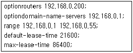
- 게이트웨이 서버는 192.168.0.1이다.
- DHCP 클라이언트에게 할당된 IP는 6시간이 지나면 사용자의 요청과 상관없이 자동적으로 24시간까지 사용할 수 있다.
- DHCP 클라이언트가 요청하지 않아도 IP를 할당해 주는 최대 시간은 6시간이다.
- DHCP 클라이언트에게 할당된 IP는 요청이 있어도 6시간이 지나면 소멸되고 재 할당된다.
(정답률: 44%)
92. 리눅스에서 사용되는 arp(addressresolutionprotocol) 명령어의 옵션들에 대한 설명 중 틀린 것은?
- -a : 캐시에 있는 특정된 또는 모든 호스트를 나열
- -v : 동적인 모드로 보여줌
- -i : 현재 캐시에 있는 특정한 호스트에 대한 MAC 주소의 값을 생성
- -n : 32bit로 된 IP, 즉 풀이(resolving)를 하지 않고 IP로 보여줌
(정답률: 34%)
93. DHCP클라이언트는 DHCP서버에 요청을 하여 IP, 게이트웨이 정보,DNS정보 등을 받아오는 역할을 한다. MAC 주소가 00:25:5C:C7:A3:C2, 요청하는 IP를 192.168.1.10으로 요청하고,leasetime은 60초 그리고 호스트 이름을 ihd, 타임아웃은 30초라고 설정하려 할때 다음 ( )안에 알맞은 옵션을 순서대로 나열한 것은?
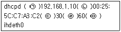
- (ㄱ) -s (ㄴ) -I (ㄷ) -o (ㄹ) -l (ㅁ) -h
- (ㄱ) -r (ㄴ) -i (ㄷ) -t (ㄹ) -l (ㅁ) -h
- (ㄱ) -s (ㄴ) -I (ㄷ) -t (ㄹ) -l (ㅁ) -h
- (ㄱ) -r (ㄴ) -i (ㄷ) -o (ㄹ) -l (ㅁ) -h
(정답률: 40%)
94. 소스코드의 백업 및 형상관리를 위해 사용하는 CVS 서버에 대한 설명 중 틀린 것은?
- 여러 파일의 버전을 관리해 주는 도구이다.
- CVS를 이용해 프로젝트를 수행하는 경우 코드의 버그를 자동으로 보여준다.
- 공동 프로젝트에서 효율적으로 버전 관리를 함으로써 파일의 중복이나 변경에 의한 오류를 방지할 수 있다.
- 현재 GNU 그룹과 같은 대규모 프로젝트에서 많이 사용한다.
(정답률: 51%)
95. CVS를 이용하여 프로젝트를 수행하려 할때 프로젝트 수행 절차를 순서대로 나열한 것은?
- 프로젝트 초기화 -> 저장소 초기화 -> 작업 공간 마련 -> 프로젝트 작업
- 저장소 초기화 -> 프로젝트 초기화 -> 작업 공간 마련 -> 프로젝트 작업
- 작업 공간 마련 -> 프로젝트 초기화 -> 저장소 초기화 -> 프로젝트 작업
- 프로젝트 초기화 -> 작업 공간 마련 -> 저장소 초기화 -> 프로젝트 작업
(정답률: 32%)
96. DOS(DenialofService)공격의 특징이 아닌 것은?
- 같은 공격에 대해서 각 시스템마다 결과가 다르게 나타날 수 있다.
- 공격의 원인이나 공격자를 추적하기 힘들다.
- 데이터 파괴, 변조, 훔쳐가는 것이 목적인 공격이다.
- 다른 공격을 위한 사전 공격으로 이용될 수 있다.
(정답률: 60%)
97. 다음의 C언어로 작성된 소스코드는 내부공격 방법 중의 하나이다. 어떤 공격을 하는 코드인가?
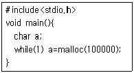
- 디스크 채우기
- 프로세스 대량 만들기
- 메모리 고갈
- 모든 프로세스 죽이기
(정답률: 57%)
98. 다음 ( )안에 들어갈 내용으로 알맞은 것은?
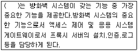
- 듀얼 홈드 호스트
- 배스천 호스트
- 스크린 호스트
- 스크린 라우터
(정답률: 41%)
99. 인터넷과 같은 공중망(PublicNetwork)을 이용하여 전용선의 효과를 줄 수 있는 기술로,기존의 전용선이 가지고 있던 확장의 어려움과 고비용을 해결하면서 전용선의 장점인 QOS와 보안기능을 제공할 수 있게 해주는 것은 다음 중 어느 것인가?
- ATM
- DMZ
- NAT
- VPN
(정답률: 60%)
100. iptables를 이용하 여 192.168.0.12에서 입력(INPUT)되는 패킷을 모두 패기 하기 위한 명령은 다음 중 어느 것인가?
- iptables -D INPUT -i 192.168.0.12 -t DROP
- iptables -A INPUT -s 192.168.0.12 -j DROP
- iptables -D INPUT -s 192.168.0.12 -m DROP
- iptables -R INPUT -i 192.168.0.12 -j DROP
(정답률: 47%)